Introduction
Resources
Ideas
Agile approach to research, with many small projects (POC), check up every 3-6 months, which can be integrated into larger projects. All with a general topic, one of the following:
- Ensamble of models which output the certainty of their prediction, instead of the prediction
- Tool for long range prediction (years) with CMIP data
-
Tool for socio-economic decision making with climate data (IPCC report)
- Multi-modal forecaster using both climate and socio-economic data (ex. average income...)
- Graph compression with GNNs, which can be used for data elaboration
Useful Datasets
- World Input-Output Database (WIOD)
- Shared Socioeconomic Pathways (SSP)
- World Bank Open Data
- United Nations Development Programme (UNDP)
- Global Burden of Disease (GBD)
- Internal monetary fund (IMF)
TODOs
- Paper: The rise of data driven weather forecasts
- Look at foundation models scaling laws
- Is it possible to finetune for prediction of unseen variables?
- Look into surrogate models, which can be intergrated into larger projects together
- Project: AI CCA cloud classification atlas
- Look into Temporal GNNs
- Look into GNNs for climate
- Look at Neural GCM @ google
- Look at Neural General Circulation Models
- Look at Liquid neural networks
- Look at Recurrent Fast Weight Programmers
- LLaMA (2023) Open and Efficient Foundation Language Models
IPCC Working Group 1
The Current State of the Climate
It is unequivocal that human influence has warmed the atmosphere, ocean and land. Widespread and rapid changes in the atmosphere, ocean, cryosphere and biosphere have occurred.
Global mean sea level increased by 0.20 [0.15 to 0.25] m between 1901 and 2018. The average rate of sea level rise was 1.3 [0.6 to 2.1] mm yr–1 between 1901 and 1971, increasing to 1.9 [0.8 to 2.9] mm yr–1 between 1971 and 2006, and further increasing to 3.7 [3.2 to 4.2] mm yr–1 between 2006 and 2018 (high confidence). Human influence was very likely the main driver of these increases since at least 1971.
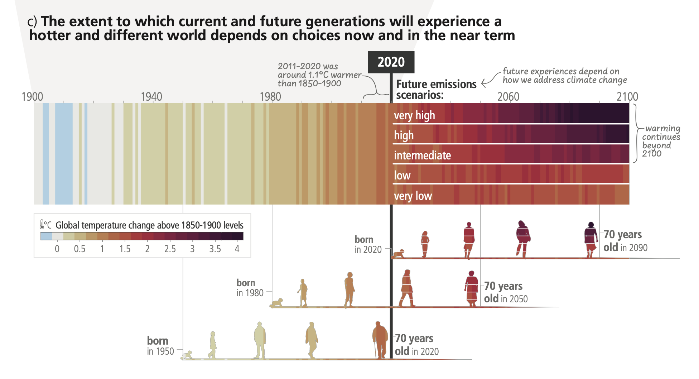
Human-induced climate change is already affecting many weather and climate extremes in every region across the globe.
Improved knowledge of climate processes, paleoclimate evidence and the response of the climate system to increasing radiative forcing gives a best estimate of equilibrium climate sensitivity of 3°C.
Possible Climate Futures
Global surface temperature will continue to increase until at least mid-century under all emissions scenarios considered. Global warming of 1.5°C and 2°C will be exceeded during the 21st century unless deep reductions in CO2 and other greenhouse gas emissions occur in the coming decades.
Many changes in the climate system become larger in direct relation to increasing global warming. They include increases in the frequency and intensity of hot extremes, marine heatwaves, heavy precipitation, and, in some regions, agricultural and ecological droughts; an increase in the proportion of intense tropical cyclones; and reductions in Arctic sea ice, snow cover and permafrost.
It is virtually certain that the land surface will continue to warm more than the ocean surface. It is virtually certain that the Arctic will continue to warm more than global surface temperature, with high confidence above two times the rate of global warming.
Continued global warming is projected to further intensify the global water cycle, including its variability, global monsoon precipitation and the severity of wet and dry events. Also, under scenarios with increasing CO2 emissions, the ocean and land carbon sinks are projected to be less effective at slowing the accumulation of CO2 in the atmosphere.
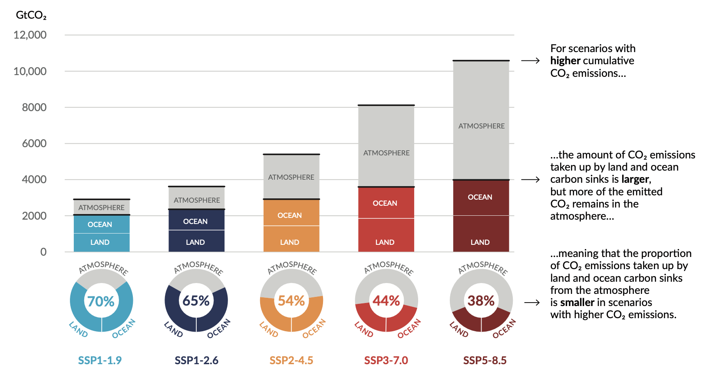
Many changes due to past and future greenhouse gas emissions are irreversible for centuries to millennia, especially changes in the ocean, ice sheets and global sea level.
IPCC Working Group 2
Observed and Projected Impacts and Risks
Human-induced climate change, including more frequent and intense extreme events, has caused widespread adverse impacts and related losses and damages to nature and people, beyond natural climate variability. Vulnerability of ecosystems and people to climate change differs substantially among and within regions driven by patterns of intersecting socioeconomic development, unsustainable ocean and land use, inequity, marginalization, historical and ongoing patterns of inequity such as colonialism, and governance.
Current unsustainable development patterns are increasing exposure of ecosystems and people to climate hazards.
Risks in the near term (2021–2040)
Global warming, reaching 1.5°C in the near-term, would cause unavoidable increases in multiple climate hazards and present multiple risks to ecosystems and humans.
Mid to Long-term Risks (2041–2100)
Beyond 2040 and depending on the level of global warming, climate change will lead to numerous risks to natural and human systems. The magnitude and rate of climate change and associated risks depend strongly on near-term mitigation and adaptation actions, and projected adverse impacts and related losses and damages escalate with every increment of global warming
IPCC Working Group 3
Recent Developments and Current Trends
Total net anthropogenic GHG emissions6 have continued to rise during the period 2010–2019, as have cumulative net CO2 emissions since 1850. Regional contributions to global GHG emissions continue to differ widely. Variations in regional, and national per capita emissions partly reflect different development stages, but they also vary widely at similar income levels. The 10% of households with the highest per capita emissions contribute a disproportionately large share of global household GHG emissions. At least 18 countries have sustained GHG emission reductions for longer than 10 years.
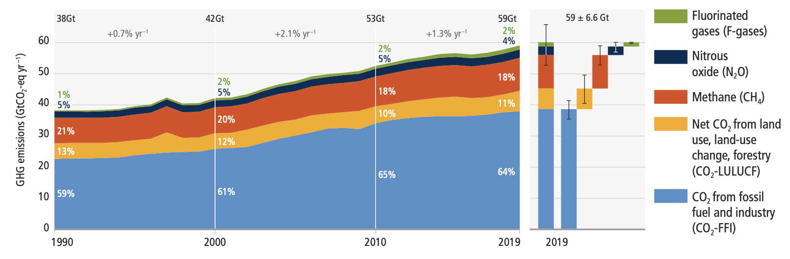
Globally, the 10% of households with the highest per capita emissions contribute 34–45% of global consumption-based household GHG emissions,21 while the middle 40% contribute 40–53%, and the bottom 50% contribute 13–15%.
The unit costs of several low-emission technologies have fallen continuously since 2010. Innovation policy packages have enabled these cost reductions and supported global adoption.

There has been a consistent expansion of policies and laws addressing mitigation since AR5. This has led to the avoidance of emissions that would otherwise have occurred and increased investment in low-GHG technologies and infrastructure. Policy coverage of emissions is uneven across sectors.
Global GHG emissions in 2030 associated with the implementation of Nationally Determined Contributions (NDCs) announced prior to COP2623 would make it likely that warming will exceed 1.5°C during the 21st century.24 Likely limiting warming to below 2°C would then rely on a rapid acceleration of mitigation efforts after 2030.
System Transformations to Limit Global Warming
Global GHG emissions are projected to peak between 2020 and at the latest before 2025 in global modelled pathways that limit warming to 1.5°C (>50%) with no or limited overshoot and in those that limit warming to 2°C (>67%) and assume immediate action. Without a strengthening of policies beyond those that are implemented by the end of 2020, GHG emissions are projected to rise beyond 2025, leading to a median global warming of 3.2°C by 2100.
All global modelled pathways that limit warming to 1.5°C (>50%) with no or limited overshoot, and those that limit warming to 2°C (>67%), involve rapid and deep and in most cases immediate GHG emission reductions in all sectors.
This would involve very low or zero-carbon energy sources, such as renewables or fossil fuels with CCS, demand side measures and improving efficiency, reducing non-CO2 emissions, and deploying carbon dioxide removal (CDR) methods to counterbalance residual GHG emissions.
Reducing GHG emissions across the full energy sector requires major transitions, including a substantial reduction in overall fossil fuel use, the deployment of low-emission energy sources, switching to alternative energy carriers, and energy efficiency and conservation.
Net zero CO2 emissions from the industrial sector are challenging but possible. Reducing industry emissions will entail coordinated action throughout value chains to promote all mitigation options, including demand management, energy and materials efficiency, circular material flows, as well as abatement technologies and transformational changes in production processes.
Urban areas can create opportunities to increase resource efficiency and significantly reduce GHG emissions through the systemic transition of infrastructure and urban form through low-emission development pathways towards net-zero emissions.
In modelled global scenarios, existing buildings, if retrofitted, and buildings yet to be built, are projected to approach net zero GHG emissions in 2050 if policy packages, which combine ambitious sufficiency, efficiency, and renewable energy measures, are effectively implemented and barriers to decarbonisation are removed.
The deployment of carbon dioxide removal (CDR) to counterbalance hard-to-abate residual emissions is unavoidable if net zero CO2 or GHG emissions are to be achieved. The scale and timing of deployment will depend on the trajectories of gross emission reductions in different sectors.
Mitigation options costing USD100 tCO2-eq–1 or less could reduce global GHG emissions by at least half the 2019 level by 2030.
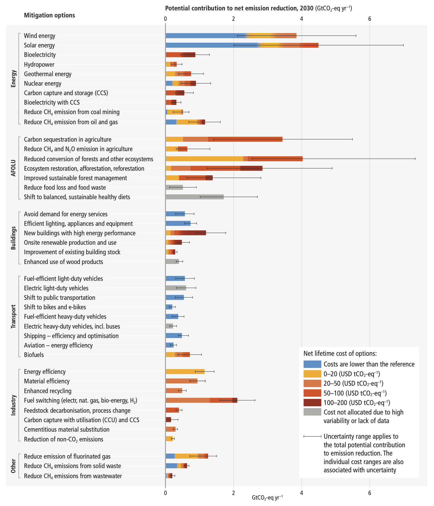
IPCC Assessment Report 6
Introduction
Assessment Report (AR6) summarises the state of knowledge of climate change, its widespread impacts and risks, and climate change mitigation and adaptation. It integrates the main findings of the Sixth Assessment Report (AR6) based on contributions from the three Working Groups
Current Status and Trends
Human activities, principally through emissions of greenhouse gases, have unequivocally caused global warming, with global surface temperature reaching 1.1°C above 1850-1900 in 2011-2020. The likely range of total human-caused global surface temperature increase from 1850–1900 to 2010–20197 is 0.8°C to 1.3°C, with a best estimate of 1.07°C.
Widespread and rapid changes in the atmosphere, ocean, cryosphere and biosphere have occurred. Human-caused climate change is already affecting many weather and climate extremes in every region across the globe. This has led to widespread adverse impacts and related losses and damages to nature and people. Vulnerable communities who have historically contributed the least to current climate change are disproportionately affected.
Approximately 3.3 to 3.6 billion people live in contexts that are highly vulnerable to climate change. Human and ecosystem vulnerability are interdependent. Regions and people with considerable development constraints have high vulnerability to climatic hazards.
Impacts on some ecosystems are approaching irreversibility such as the impacts of hydrological changes resulting from the retreat of glaciers, or the changes in some mountain and Arctic ecosystems driven by permafrost thaw.
Climate change has reduced food security and affected water security, hindering efforts to meet Sustainable Development Goals. In all regions increases in extreme heat events have resulted in human mortality and morbidity. The occurrence of climate-related food-borne and water-borne diseases and the incidence of vector-borne diseases have increased. In assessed regions, some mental health challenges are associated with increasing temperatures.
Adaptation planning and implementation has progressed across all sectors and regions, with documented benefits and varying effectiveness. Despite progress, adaptation gaps exist, and will continue to grow at current rates of implementation.
Growing public and political awareness of climate impacts and risks has resulted in at least 170 countries and many cities including adaptation in their climate policies and planning processes. Maladaptation especially affects marginalised and vulnerable groups adversely. Key barriers to adaptation are limited resources, lack of private sector and citizen engagement, insufficient mobilization of finance (including for research), low climate literacy, lack of political commitment, limited research and/or slow and low uptake of adaptation science, and low sense of urgency.
Policies and laws addressing mitigation have consistently expanded since AR5. Global GHG emissions in 2030 implied by nationally determined contributions (NDCs) announced by October 2021 make it likely that warming will exceed 1.5°C during the 21st century and make it harder to limit warming below 2°C. There are gaps between projected emissions from implemented policies and those from NDCs and finance flows fall short of the levels needed to meet climate goals across all sectors and regions.
From 2010 to 2019 there have been sustained decreases in the unit costs of solar energy (85%), wind energy (55%), and lithium-ion batteries (85%), and large increases in their deployment.
Policies implemented by the end of 2020 are projected to result in higher global GHG emissions in 2030 than emissions implied by NDCs, indicating an ‘implementation gap’.
Future Climate Change, Risks, and Long-Term Responses
Continued greenhouse gas emissions will lead to increasing global warming, with the best estimate of reaching 1.5°C in the near term in considered scenarios and modelled pathways. Every increment of global warming will intensify multiple and concurrent hazards.
Global warming will continue to increase in the near term (2021–2040) mainly due to increased cumulative CO2 emissions in nearly all considered scenarios and modelled pathways. In the near term, global warming is more likely than not to reach 1.5°C even under the very low GHG emission scenario and likely or very likely to exceed 1.5°C under higher emissions scenarios.
With further warming, every region is projected to increasingly experience concurrent and multiple changes in climatic impact-drivers. Compound heatwaves and droughts are projected to become more frequent, including concurrent events across multiple locations. Projected regional changes include intensification of tropical cyclones and/or extratropical storms, and increases in aridity and fire weather.
With every increment of global warming, regional changes in mean climate and extremes become more widespread and pronounced. Risks and projected adverse impacts and related losses and damages from climate change escalate with every increment of global warming. The level of risk will also depend on trends in vulnerability and exposure of humans and ecosystems. Future exposure to climatic hazards is increasing globally due to socio-economic development trends including migration, growing inequality and urbanisation.
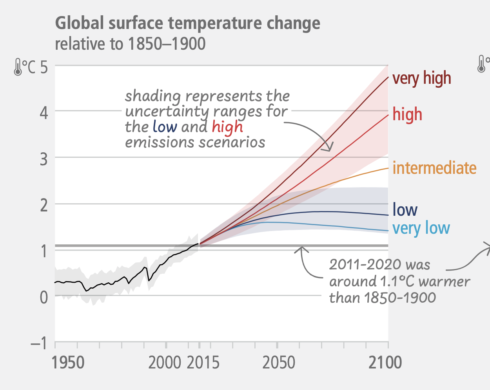
Some future changes are unavoidable and/or irreversible but can be limited by deep, rapid, and sustained global greenhouse gas emissions reduction. The likelihood of abrupt and/or irreversible changes increases with higher global warming levels. Deep, rapid, and sustained GHG emissions reductions would limit further sea level rise acceleration and projected long-term sea level rise commitment.
As warming levels increase, so do the risks of species extinction or irreversible loss of biodiversity in ecosystems including forests, coral reefs, and in Arctic regions.
Adaptation options that are feasible and effective today will become constrained and less effective with increasing global warming. With increasing global warming, losses and damages will increase and additional human and natural systems will reach adaptation limits.
Limiting human-caused global warming requires net zero CO2 emissions. Cumulative carbon emissions until the time of reaching net zero CO2 emissions and the level of greenhouse gas emission reductions this decade largely determine whether warming can be limited to 1.5°C or 2°C. All global modelled pathways that limit warming to 1.5°C (>50%) with no or limited overshoot, and those that limit warming to 2°C (>67%), involve rapid and deep and, in most cases, immediate greenhouse gas emissions reductions in all sectors this decade.
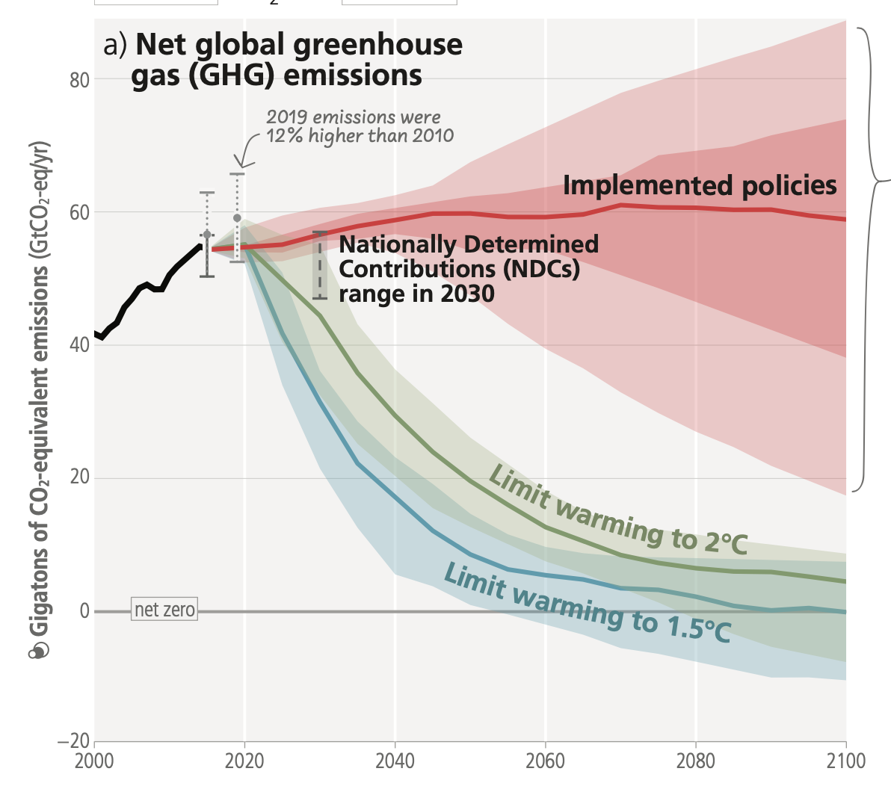
If warming exceeds a specified level such as 1.5°C, it could gradually be reduced again by achieving and sustaining net negative global CO2 emissions. This would require additional deployment of carbon dioxide removal, compared to pathways without overshoot, leading to greater feasibility and sustainability concerns. Overshoot entails adverse impacts, some irreversible, and additional risks for human and natural systems, all growing with the magnitude and duration of overshoot.
Responses in the Near Term
There is a rapidly closing window of opportunity to secure a liveable and sustainable future for all. increased international cooperation including improved access to adequate financial resources, particularly for vulnerable regions, sectors and groups, and inclusive governance and coordinated policies.
Deep, rapid, and sustained mitigation and accelerated implementation of adaptation actions in this decade would reduce projected losses and damages for humans and ecosystems. Delayed mitigation and adaptation action would lock in high-emissions infrastructure, raise risks of stranded assets and cost-escalation, reduce feasibility, and increase losses and damages. Near-term actions involve high up-front investments and potentially disruptive changes that can be lessened by a range of enabling policies.
These system transitions involve a significant upscaling of a wide portfolio of mitigation and adaptation options. Feasible, effective, and low-cost options for mitigation and adaptation are already available, with differences across systems and regions.
Prioritising equity, climate justice, social justice, inclusion and just transition processes can enable adaptation and ambitious mitigation actions and climate resilient development. Adaptation outcomes are enhanced by increased support to regions and people with the highest vulnerability to climatic hazards.
GNN Transformers
Introduction
A graph is a kind of data structure, which is composed of nodes (objects) and edges (relationships).
Most of the current GNNs are based on the message passing paradigm, which is a generalization of the convolutional neural networks (CNNs) to non-Euclidean domains.
Often GNNs suffer from the following problems:
- Over-smoothing: the information from the nodes is averaged out, and the model cannot distinguish between nodes that are far away from each other.
- Over-squashing: due to the exponential computation with the increase in model depth.
Use of GNNs in Transformers
There have been developed three main ways to use GNNs in Transformers:
- Auxiliary Modules: GNNs are used to inject auxiliary information to improve the performance of the Transformer.
- Improve Positional Embedding with Graph: compress the graph structure into positional embedding vectors, and input them to the Vanilla Transformer.
- Improve attention matrix from graph: inject graph priors into the attention computation via graph bias terms.
These type of modifications tend to yield improved performance both on node level and graph leevel tasks, more efficient training and inference, and better generalization. This being said different group models enjoy different benefits.
Graph building blocks can be used on top of existing attention mechanisms, can be alternated with self-attention layers, or can be used in conjunction (concatenated) with existing transformer blocks.
Some Architectures
- GraphTrans: adds a transformer sub-networkon top of a standard GNN layer. It performs as a specialized architecture to learn local representation, while the transformer sub-network learns global representation of pairwise node interactions.
- Grover: uses two GTransformers to learn node and edge representations, respectively. The node representations are then used to update the edge representations, and vice versa. The inputs are first passed to a GNN which is trained to extract vectors as query, key and value. This layer is then followed by a self-attention layer.
- GraphiT: adopts a Graph Convolutional Kernel Network layer to produce a stucture aware embedding of the graph. The output of this layer is then passed to a self-attention layer.
- Mesh Graphormer: stacks Graph residual blocks on a multi-head self-attention layer. The graph residual block is composed of a graph attention layer and a graph feed-forward layer. It improves the local interactions using a graph convolutional layer in each transformer block.
- GraphBERT: uses graph residual terms in each attention layer. It concatenates the graph residual terms with the original attention matrix, and then applies a linear transformation to the concatenated matrix.
Positional Embeddings
It is also possible to compress the grqph structure into positional embedding vectors, and input them to the Vanilla Transformer. Some approaches adopt Laplacian eigenvectors as positional embeddings, while others use svd vector of adjacent matrices as positional embeddings.
ViTs
General Circulation Models
Introduction
General Circulation Models (GCMs) are a class of models which use a combination of numerical solvers and tuned representations for small scale processes.
Neural GCM
Neural GCM is a GCM which uses a neural network to represent the small scale processes. It is competitive with ML models on 10 days forecasts, and competitive with IFS on 15 days forecasts.
Uses a fully differentiable hybrid GCM of the atmosphere, with a model split into two main subcomponents:
- A Differentiable Dynamical Core (DDC) which solves the equations of motion (dynamic equations);
- A Learned Physics module, which learns to parametrize a set of physical processes (physics equations) with a neural network.
End-to-end training of GCMs
Uses extended backpropagation between the DDC and the Learned Physics module.
Three loss functions:
- MSE for accuracy: Takes into account the layer lead time over the forecast horizon. Double penalty problem: wrong features at long lead times are penalized more than wrong features at short lead times.
- Squared Loss: Encourages spectrum to match the data.
- MSE for bias: Batch average mean amplitude of the bias.
Trained on three days rollout data. Remained stable for year-long simulations.
Stochastic GCM
Introduces randomness to be able to produce ensambles of forecasts.
Loss is CRPS (Continuous Ranked Probability Score) = Mean absolute error + Variance in ensamble spread
Linear Transformers
Introduction
How to rout information in a sequence of tokens? -> We use query + key matrices
- Query: what we are looking for (what info we want to extract)
- Key: what type of info the node contains (what info we have)
Inner product is used to rout (similarity between query and key). This is called soft-routing as it is a weighted average of all the keys (where inner product is larger).
Complexity is \( O(n^2) \), where n is the number of tokens (sequence length), embedding size is d.
\( Q \times K = n \times n \) -> where multi-head attention doesn't help, but the n matrix could be simplified into n/heads matrix.
Ex. 4 heads -> 512 / 4 = 128
We can approximate Q into a low rank matrix, and complexity would be reduced to \( O(n) \).
Linear Transformer
\( \text{Attention} = \text{softmax}(\frac{QK^T}{\sqrt{d_k}})V \)
If the term inside the softmax is low rank, then we can reduce computation.
Eigenvalues of Q and K can be used to determine if matrix needs to be high or low rank. Results show that most of the times 128 is enough.
How to reduce dimensionality? We can use a random projection P before the self-attention layer.
\( \text{Attention} = \text{softmax}(\frac{Q(EK)^T}{\sqrt{d_k}})FV \)
So we introduce the E and F matrices (fixed, not learned). The term inside the softmax becomes nxk, while FV is kxn. The shapes so are correct for matmult.
Results
With large sequence lengths, the linear transformer keeps inference times constant, as it doesn't depend on the sequence length n but also on k. Complexity is reduced from \( O(n^2) \) to \( O(nk) \).
How to choose k?
\( k = \frac{5\log(n)}{c} \)
So it depends on n still? Complexity is \( O(n\log(n)) \) now.
However we can make it linear:
\( k = min { \theta(9d \log(d)), 5\theta(\log(n)) } \)
In the first case it is linear in d, in the second case it is linear in n. We can choose the minimum of the two. So it's enough to downproject the matrix to a dimension of about d.
Structured State Spaces
Introduction
Especially suitable for long and continuous time series (speech, EEG, ...).
Use seq to seq map to map input to a latent space.
<B, L, D> --> <B, L, D>
Much more efficient than Transformers, both computationally and memory wise. Also better at modelling long term dependencies.
Model
These are continuous time models (CTMs), which also allow for irregular sampling.
State Space Models (SSM) are parameterized by matrices A, B, C, D, and map an input signal \( u(t) \) to output \( y(t) \) through a latent state \( x(t) \). Recent theory on continuous-time memorization derives special A matrices that allow SSMs to capture LRDs mathematically and empirically. (Right) SSMs can be computed either as a recurrence or convolution.
Drawbacks are that are inefficient and prone to vanishing gradients. S4 introduces a novel parameterization that efficiently swaps between these representations, allowing it to handle a wide range of tasks, be efficient at both training and inference, and excel at long sequences.
Combine strength of the former models into State space models (SSMs):
- Seq to seq: discretization of continuous sequence
- RNN: hidden memory state
- CNN: efficient computation and parallelization ability
\( u(t) \leftarrow y(y) \)
where \( u(t) \) is the input and \( y(t) \) is the output.
\( x'(t) = Ax(t) + Bu(t) \) \( y(t) = Cx(t) + Du(t) \)
where \( x(t) \) is the hidden state space, \( u(t) \) is the input, \( y(t) \) is the output we are trying to predict, \( A \) is the most important matrix called state matrix. \( x(t) \) can be a continuous function or a discrete sequence obtained by sampling.
How do we initialize the state matrix so that it handles long term dependencies?
(these matrices are not learned)
The Hippo approach allows memorization of the input (input reconstruction), even after a long time. It works by encoding the data with Legendre polynomials, which are orthogonal and can be computed efficiently. It allows to fully describe the input sequence even after long sequences.
The idea is to condition A with low rank correction (computable as Cauchy kernel). A can be computed with the Hippo method, continuous time memorization (set of useful matrices).
-
To discretize: sample from the continuous function \( x(t) \) at discrete time points \( t_i \) Convert A to discrete time matrix \( \hat{A} \) using the formula: \( \hat{A} = (I - \frac{\delta}{2}A)^{-1} (I + \frac{\delta}{2}A) \)
-
To convolution: simply unroll the timesteps into a single dimension and apply a convolutional layer, this allows parallelization
With discrete representation, the efficiency is on par with RNNs. This is the reason the frequency domain is used to apply convolutions, which allows for efficient parallelization.
Results
A general purpose model, which can be applied to continuous, recurrent and convolutional tasks and spaces. It is also efficient, both in terms of memory and computation, and performs better than other models (even transformers) on long sequences.
ClimaX
ClimaX is a foundation model designed to be pre-trained on heterogeneous data sources and then fine-tuned to solve various downstream weather and climate problems.

The set of climate and weather variables is extremely broad, and predictions may be required for regional or even spatially incomplete data, even at different resolutions. Current CNN-based architectures are not applicable in these scenarios, as they require the input to be perfectly gridded, contain a fixed set of variables, and have a fixed spatial resolution. resolution. Transformer-based architectures, on the other hand, offer much greater flexibility by treating the image-like data as a set of tokens. As a consequence, the backbone architecture chosen is a Vision Transformer to provide greater flexibility.

Two significant changes to this model were implemented. The first change involved variable tokenization, which includes separating each variable into its own channel and tokenizing the input into a sequence of patches. The second change was variable aggregation, introduced to speed up computation by reducing the dimensionality of the input data and to aid in distinguishing between different variables, thereby enhancing attention-based training. After combining variables, the vision transformer block can produce output tokens that are then processed through a linear prediction head to recreate the original image. During the pre-training phase, a latitude-weighted reconstruction error is used to keep into account the location of the current patch. For fine-tuning, the ClimaX modules can be frozen, allowing for training only on the intended part of the architecture. In fact, often only the final prediction head and variable coding modules need retraining. This model has undergone testing for several downstream tasks, including global and regional forecasting and prediction for unseen climate tasks.
PanguWeather
Pangu Weather is a transformer architecture trained on three dimensional weather variables, as opposed to Climax, where all data was two dimensional. The lead time is also handled differently, with the model being trained to predict the weather at a certain time in the future, as opposed to the approach taken in the ClimaX work, where the lead time is passed as a parameter during the training phase.

The former approach is more similar to the one used in this project, where the simplicity of the dataset allows for a more straightforward implementation of the lead time, sacrificing some flexibility in the process. Finally, the Pangu weather model features some advanced techniques which separate it from all other competitors, namely the use of two different resolutions for the encoding of each variable, allowing the model to capture both large scale and small scale features, and use the attention mechanism to focus on different parts of the input data at the same time.

To achieve these two resolution, an encoder-decoder approach is used, where the encoder is tasked with the downscaling of input variables, and the decoder is tasked with the upscaling of the output. All transformer blocks are then applied to the output of the encoder, taking as input both the low and high resolution information.
FuXi
FuXi is an auto-regressive model for weather forecasting. The model is based on the U-transformer architecture, and is able to recurrently produce a prediction for the next timestep, given the previous predictions.

To generate a 15 days forecast, it is estimated it takes the model around 60 iterations, with a lead time of 6 hours. The loss utilized is multi-step, meaning it takes into account several timesteps at once, minimizing the error for each of them. This is in contrast with the approach taken in this project, where the loss is computed for each timestep individually. The U-transformer takes as input around 70 variables, for the current timestep, as well as the the preceding frame. All the variables used for this model are however restricted to two dimensions, ignoring any height layer. This architecture is a variation of the vanilla transformer model, and as opposed to the latter, before passing the encoded information to the self attention blocks, it downscales partially the input.
FourcastNet
FourcastNet is an architecture based on the Adaptive Fourier Neural Operator, which is a neural network model designed for high-resolution inputs, fused with a vision transformer backbone. The Fourier Neural Operator is a neural network architecture that uses a Fourier basis to represent the input data, allowing for the efficient computation of convolutions in the Fourier domain.

The use of this module allows to have a very small footprint in GPU memory, which is crucial for the training of large models. For instance, the base model used is around 10Gb in size, while analogue models with similar number of parameters have a size of around eight times as large.
ACE: A fast, skillful learned global atmospheric model for climate prediction
ACE is a global atmospheric model that uses a neural network to learn the dynamics of the atmosphere.
- 200M parameters auto-regressive model
- 100 km resolution global atmospheric model
- 6 hours temporal resolution, stable for 100 years
Model
The architecture uses a Spherical Fourier Neural Transformer (SFNT) to learn the dynamics of the atmosphere. This model uses a spherical harmonic transform of the grid, which is more suitable for the spherical geometry of the Earth. This enables more efficient computation of convolutions on spherical space.
The dataset used is FV3GFS, which is a global atmospheric model with 100 km resolution used as the US weather model.
As normalization of samples, residual scaling is used. Where predicting an output always equal to the input for each variable would mean that each variable contributes equally to the loss (indipendently of the scale of variables).
Experimental Transformer
ExPT is a transformer architecture that uses unsupervised learning and in-context pretraining (few-shot training in Transformers).
- Pretraining: unlabeled designs from context X (without score). Using synthetic data, so functions that operate on the same domain as the objective function.
- Fine-tuning (Adaptation): the model conditions using a small amount of pairs <design, score>
How do we generate the functions? -> there are several ways (ex. Gaussian Mixtures, Gaussian Processes, etc.) In this case Gaussian Processes are used with RBF kernels.
Model
Encoder model is used for pairs \(<\texttt{design}, \texttt{score}>\), in conjunction with y_m, to create an hidden vector h. Token embedding is done with two linear layers, one for the pairs and one for the score.
How do we model conditional probability? -> we use a Variational Auto-Encoder to model the conditional probability \( p_{\theta}(x_i | h_i) \).
MaxViT
Makes use of a new scalable attention model (multi-axis attention).
- Blocked local attention: attention is only computed within a block of tokens.
- Dilated global attention: attend to some tokens is a sparse way.
Allows for linera complexity interactions between local/global tokens.
Normally attention requires quadratic complexity, but this is reduced to linear complexity. Attention is decomposed into local and global attention (by decomposing spatial axis).
Given:
\( x \in R^{H \times W \times C} \)
- Normal attention flattens the H and W dimensions into a single one.
- Block attention separates the token space into \( < \frac{H}{P} \times \frac{W}{P}, P \times P, C > \) non overlapping windows, each of \( P \times P \) size.
- Grid attention subdivides the token space into \( < G \times G, \frac{H}{G} \times \frac{W}{G}, C > \), where each grid point is uniformly spread over the token space.
Using both block and grid attention, we can compute attention in linear time and have interaction between local and global tokens. Normally block attention underperforms on large token spaces, as it is not able to capture long range dependencies.
Hiera ViT
Introduction
Hiera ViT is a hierarchical vision transformer that removes additional bulk operations deemed unnecessary. Several components can be removed without affecting performance. This leads to a more simple and accurate model, which is also faster.
Hiera
Uses strong pretext task (with Masked autoencoder) to teach spatial bias. Local attention is used inside the mask units.
The problem when using masked autoencoders is the fact that we hide coarser information and we proceed deeper in the network. To avoid this, sparse masking is used (deletes patches, not overrides them). This also keeps the difference between token (internal feature representation of the model) and masked units (fixed size across layers).
The baseline used is MViTv2, which learns a multiscale representation of the image over 4 stages. First it learns low level features (but high spatial resolution), then at each stage trades channel capacity for spatial resolution.
Pooling attention is used mostly to reduce the dimensionality of the input (especially for K and V, while Q is pooled to transition between stages by reducin spatial resolution).
Simplifications
Relative Positional Embedding
This module was added to each attention block to allow the model to learn relative positional information. This is not necessary when training with MAEs, and absolute positional embeddings can be used.
Remove Convolutions
Convolutions add unnecessary overhead since they provide benefits only when dealing with images. These are replaced with maxpools, reducing the accuracy of the model by 1.0%, however, when removing also maxpools with stride==1, the accuracy is nearly the same as the original one, but 22% faster.
Remove Overlap
Maxpools with 3x3 kernel size cause an issue of dimensionality, which is normally fixed with "separate and pad" technique. By avoiding overlaps between maxpools, this stage is unnecessary as kernel size equals to stride. The accuracy stays the same, but the model is 20% faster.
Remove Attention Residual
Attention residual is used as it helps to learn the pooling attention. It is used between Q and the layer output.
Mask Unit Attention
Mask unit attention is used to learn the spatial bias as well as for dimensionality reduction (removing it would slow down the model). Instead local attention is used within the unit masks, so that tokens are grouped already once they arrive at the attention block. We can then perform attention within these groups (units).
Results
The model is 100% faster than the baseline, while remaining at the same accuracy for images.
For videos, the model is 150% faster, and accuracy is increased by 2.5%.
Swin Transformer
Introduction
Hierarchical Vision Transformer, representation is computed with shifting window. Self attention is limited non overlapping local windows. Allows for cross-window attention.
Architecture
Patch size is 4x4 and 3 rgb channels. Linear embedding is applied to the patch, and size is constant C. Swin attention is then applied and patch merging is done for 2x2 neighboring patches. Token reduction by 4:
\( \frac{H}{4} \times \frac{W}{4} \rightarrow \frac{H}{8} \times \frac{W}{8} \)
Output dimension is set to 2C.
Swin Attention
The swin transformer block replaces standard self attention with a sliding window attention, linear MLP layerm and GeLU activation function. Before attention layer normalization is applied.
The swin self attention is computed within a local window of size \( M \times M \), which makes it more scalable then normal self attention.
This approach lacks connection cross window, so cross window attention is introduced. This method uses shifted windows partitioning, which alternates between two partitioning configurations.
- Partition 8x8 feature map into 2x2 windows;
- Shift next layer from the previous by displacing the window.
How to compute attention efficiently?
Several windows in the same batch can be created with with cycling shifting process.
Relative Bias Problem
Add bias matrix B before softmax computation.
\( Attn(Q, K, V) = softmax(\frac{QK^T}{\sqrt{d_k}} + B) V \)
where B is a learnable matrix of size \( M^2 \times M^2 \), and \( M^2 \) is the number of patches in a window. This matrix can also be optimized by approximation, making it smaller with smaller window size:
\( B \in R^{M^2 \times M^2} \rightarrow B ~ \hat{B} \in R^{(2M-1) \times (2M-1)} \)
Variations of Swin Transformer model
| Model | C | Layer sizes | Parameters |
|---|---|---|---|
| Swin-B | 96 | <2, 2, 6, 2> | 29M |
| Swin-T | 96 | <2, 2, 18, 2> | 50M |
| Swin-S | 128 | <2, 2, 18, 2> | 88M |
| Swin-L | 192 | <2, 2, 18, 2> | 88M |
Swin Transformer V2
Introduction
Swin Transformer V2 is an improved version of the Swin Transformer, which is a hierarchical vision transformer. It is designed to scale up to higher capacity and resolution.
Some problems with the original Swin Transformer are:
- tranining instability
- resolution gaps
- hunger for labeled data
Architecture and solutions
For the previous problems, the following solutions are proposed:
Residual post norm method
The residual post norm method is used to stabilize training. It replaces the pre-norm residual connection used in Swin Transformer with a post-norm residual connection.
The output of the residual block is normalized before merging with the main branch (amplitude of the main branch does not accumulate in the residual branch). This means the activation amplitudes are much milder, which makes training more stable.
Cosine Attention
Scaled cosine attention is used instead of dot product attention.
\( Sim(q_i, k_j) = \frac{cos(q_i, k_j)}{\tau} + B_{ij} \)
where \( B_{ij} \) is the relative position bias matrix between pixels i and j, while \( \tau \) is a learnable scaling factor.
Log-Spaced continuous bias term
The coordinates are log-spaced, which allows for better resolution of the attention map.
\( \hat{\Delta x} = sign(x) log(1 + \Delta x) \)
where \( \hat{\Delta} x \) is the new log spaced coordinate, and \( \Delta x \) is the original coordinate.
The bias term also uses log-spaced continuous relative positions, instead of the parametrized approach.
Self-supervised pre-training (SimMM)
This method avoids the need for many labeled samples.
Scaling up model capacity
The Swin Transformer V2 is scaled up by increasing the number of layers and channels. There are two main issues with this approach:
- Instability when increasing the number of layers: activations at deeper layers increase drammatically, creating a problem of discrepancy between layers of the network;
- Degrade of performance when transfering to different resolutions.
Closed-form continuous-time neural networks
Introduction
Closed-form continuous-time (CfC) models resolve the bottleneck of liquid networks (requiring a differential equation solver, which lengthens the inference and training time) by approximating the closed-form solution of the differential equation.
Approximating Differential Equations
We need to derive an approximate closed-form solution for LTC networks.
\( x(t) = B \dot e−[wτ + f(x,I;θ)]t \dot f(−x, −I; θ) + A \)
The exponential term in the equation drives the system’s first part (exponentially fast) to 0 and the entire hidden state to A. This issue becomes more apparent when there are recurrent connections and causes vanishing gradient factors when trained by gradient descent.
To reduce this effect, we replace the exponential decay term with a reversed sigmoidal nonlinearity.
The bias parameter B is decided to be part of the trainable parameters of the neural network and choose to use a new network instance instead of f (Bias).
We also replace A with another neural network instance, h(. ) to enhance the flexibility of the model.
Instead of learning all three neural network instances f, g and h separately, we have them share the first few layers in the form of a backbone that branches out into these three functions. As a result, the backbone allows our model to learn shared representations.
The time complexity of the algorithm is equivalent to that of discretized recurrent networks, being at least one order of magnitude faster than ODE-based networks.
Problems
CfCs might express vanishing gradient problems. To avoid this, for tasks that require long-term dependences, it is better to use them together with mixed memory networks.
Inferring causality from ODE-based networks might be more straightforward than a closed-form solution.
Recurrent Fast Weight Programmers
Introduction
With linear transformers, we can prove FWP are effective and fast. In this case both slow and fast networks are Feed Forward Networks, and consist of the same layer.
What if we add recurrence to slow and fast networks?
Delta RNN
Use RNN for fast weights.
Add recurrent term to feedforward of linear transformer.
\( y^{(t)} = W^{(t)}q^{(t)} + R^{(t)}f(y^{(t-1)}) \)
where \( R^{(t)} \) is the recurrent matrix with additional fast weights, and \( f(y^{(t-1)}) \) is the output of fast net at previous time step + softmax activation function.
Recurrent Delta RNN
Make also slow network recurrent via the fast network, taking fast network previous output as input.
\( k^t = W_kx^t + R_k f(y^{t-1}) \) \( v^t = W_vx^t + R_v f(y^{t-1}) \) \( q^t = W_qx^t + R_q f(y^{t-1}) \)
where \( R_k, R_v, R_q \) are the recurrent matrices for the slow network (slow weights), and each equation corresponds to query, key and value pairs calculations for attention of the slow network.
Problems
The network causes additional complexity with regards to linear transformers, but it is still linear (same order of complexity).
Liquid Neural Networks
Introduction
In classical statistics there is an optimal amount of paramterers for a model, after which performance decreases. This problem is known as overparametrization and is also present in neural networks. The recent developments in transformers and vision transformers have shown that overparametrization can be beneficial for performance.
Benefits include new emergent behaviours, more general learning and better generalization and robustness. This is at the cost of increased computational complexity and memory requirements, as well as lower accuracy on minority samples.
Brain inspired, building blocks are neurons and equations from neuron to neuron.
Characteristics
Liquid neural networks stay adaptable even after training. Good for going out of distribution, so for real world applications (drone navigation, self driving cars).
Neural dynamics are continuous processes, so they can be described by differential equations.
Liquid State Machines
Continuous time/depth neural networks (CTRNNs) are a type of recurrent neural network (RNN) where the nodes (neurons) are described by differential equations.
\( \frac{dx(t)}{dx} = f_{n,k,l}(x(t), I(t), \theta) \)
Where f is the neural network, x is the state of the neuron, I is the input and \(\theta\) are the parameters of the network.
The state of the network is the state of all the neurons in the network.
There is no computation for each time step, the network is updated arbitrairly, unlike RNNs.
\( \frac{dx(t)}{dx} = -\frac{x(t)}{\tau} + f_{n,k,l}(x(t), I(t), \theta) \)
Implementation
We need a numerical ODE solver, to resolve the differential equations.
The backward pass can either be done with the adjoint sensitivity method (loss + neural ODE solver + adjoint state) or with the backpropagation through time method (classic). The latter method is considered better as it is not a black box.
Liquid Time-Constant Networks
Leaky integrator neural model
\( \frac{dx(t)}{dt} = -\frac{x(t)}{\tau} + f_{n,k,l}(x(t), I(t), \theta) \)
Uses conductance-based synapses, which are more biologically plausible than the classic synapses.
\( S(t) = f_{n,k,l}(x(t), I(t), \theta)(A - x(t)) \)
\( \frac{dx(t)}{dt} = - [\frac{1}{\tau} + f_{n,k,l}(x(t), I(t), \theta)]x(t) + f_{n,k,l}(x(t), I(t), \theta)A \)
The first term is time-dependent, while the second term the input representation at the current time step.
Activations are changed to differential equations, interactions are given by non-linearity (ex. neural nets).
The network might associate the dynamics of the task with its own behaviour (ex. steering left/right implies camera movement).
The liquid time-constant (LTC) model is based on neurons in the form of differential equations interconnected via sigmoidal synapses.
Because LTCs are ordinary differential equations, their behavior can only be described over time. LTCs are universal approximators and implement causal dynamical models. However, the LTC model has one major disadvantage: to compute their output, we need a numerical differential equation-solver which seriously slows down their training and inference time.
Expressivity
Using the trajectory length method it is possible to measure the expressivity of a network. The method consists in projecting the latent space of the network onto a lower dimensional space and measuring the length of the trajectory in the lower dimensional space (ex. 2D).
These networks tend to have a higher expressivity than RNNs, but are bad with long term dependencies.
Differential equations can form causal structures, which is good.
Some limitations include:
- the complexity of this network is tied to the ODE solver, which use fixed steps. Some solutions include Hypersolvers, closed form solutions and sparse flows.
- Vanishing gradients and exploding gradients are still a problem. A possible solution is to use a mixed memory wrapper.
Neural Circuit Policies
Neural Circuit Policies are recurrent neural network models inspired by the nervous system of the nematode C. elegans. Compared to standard ML models, NCPs have
- Neurons that are modeled by an ordinary differential equation
- A sparse structured wiring
MetNet 3
- Temporal resolution: 2 minutes
- Spatial resolution: 1 km
The network is a U-Net in conjunction with a MaxVit architecture
- Topographical embedding: automatically embeds time-indipendent variables (4km tokens) for 20 parameters
- U-Net: based on a fully convolutional neural network whose architecture was modified and extended to work with fewer training images and to yield more precise segmentation
- MaxVit: hybrid (CNN + ViT) image classification models.
Uses parameter oriented training for lead time (0 - 24 hours). Masks out with 25% probability a block of data.
Spatio-Temporal Swin-Transformer
Input to the model is 4D with the addition of the temporal dimension.
The input video is defined to be of size T×H×W×3, tokenization is 2x4x4x3: In Video Swin Transformer, we treat each 3D patch of size 2×4×4×3 as a token, while the channel size is not patchified.

Spatial downsampling is applied to reduce the embedding space. We used a fully connected layer to scale up the dimension of the incoming data.
The proposed network is tested on the Weather4Cast2021 weather forecasting challenge data, which requires the prediction of 8 hours ahead future frames (4 per hour) from an hour weather product sequence.
This paper used 3D patch embedding, 3D shifted window multi-head self attention as well as patch merging. This paper has 2d variables as channel dimension is not patchified. In my case we'll need to create 4D patch embedding as also height layer has to be partitioned.
GraphCast
Graphcast is a graph neural network architecture with an encoder-decoder configuration. The graph neural network is used to encode unstructured input data into a graph representation. As opposed to, for instance, convolutional layers where neighbouring information is encoded in a structured grid, graph layers use message passing between nodes to capture the relationships between different parts of the input data. This allows for the encoding of different kind of information, not necessarily restricted to a grid configuration.

One important hyperparamter to be set in this kind of architectures is the number of hops the messages containing neighbouring information are allowed to travel. This is crucial for the model to learn from the correct amount of knowledge, and allows for reducing the computational complexity of the model, as the number of hops is directly related to the time required for the model to train.

Linear Transformers as FWP
Introduction
The concept of fast weight programmers (FWP) is introduced in this paper.
The idea is to use a slow network to program by gradient descent the weights of a fast network. FWP learn to pmanipulate the content of a finite memory and dynamically interact with it.
Linear transformers have constant memory size and time complexity linear which depends on the sequence length. The time complexity is reduced thanks to the linearization of the self-attention layer and softmax operation.
Linear Transformers as FWP
In normal neural networks, the weights are fixed and the input is manipulated, while the activation is input dependant and can change at inference time. The idea of FWP is also have the weights variable and input dependent (synaptic modulation).
- Context-dependent -> slow weights
- Context-independent -> fast weights
The process revolves around a slow network which is trained to program the weights of the fast network. This makes the fast weights dependent on the spatio-temporal context of the input stream.
Which instructions to use? Outer product:
\( a^{(i)}, b^{(i)} = W_ax^{(i)}, W_bx^{(i)} \) \( W^{(i)} = \sigma (W^{(i-1) + a^{(i)} \oplus b^{(i)}}) \) \( y^{(i)} = W^{(i)} x^{(i)} \)
The outer product is \( \oplus \), \sigma is the activation function, W_a and W_b are the trainable slow weights, while W is the fast weight matrix.
Linearizing self-attention
Instead of removing the softmax, prior works have introduced techniques for linearizing the softmax. This improves the computational efficiency of the self-attention layer for long sequences.
An important term is the softmax kernel \( \kappa(k, q) = exp(k \dot q) \), which in linear self-attention is approximated by another kernel \( \kappa'(k, q) = \phi(k)^T \phi(q) \).
Since the embedding space for keys is limited, there is only room for d orthogonal vectors. If the length of the sequence is larger than d, th model might be in a overcapacity regime. In this case the model should dynamically interact with the memory content and determine which association to remember and which one to forget. On the other hand, the standard transformer stores associations as immutable pairs, increasing its memory requirements.
AICCA: AI-driven Cloud Classification Atlas
Why?
Clouds are the cause of the most uncertainty in future climate projections.
Model + Dataset
It has been used a rotation invariant auto-encoder + hierarchical agglomerative clustering to capture the distinctions between cloud textures with just raw multi-spectral imagery.
This was used to create a new cloud dataset (AICCA), consisting of AI generated clouds + labels for each cloud type sampled in 22 years of MODIS data. This is a NASA hosted aqua and terra satellite imagery dataset.
Training
The first phase after obtaining the MODIS dataset is to train the RI autoencoder and then define cloud categories by clustering the compact latent representations produced by the trained autoencoder. The latent space has to explicitly capture the variety of input textures among ocean clouds and also map to differences in physical properties.
In addition, the use of a specific rotation-invariant loss function allows the model to lean in a way that is agnostic to orientation, for similar morphological clouds and thus places those similar clouds in the same cluster.
Assigning Clusters
Cloud clusters have to be:
- physically reasonable
- capture information on spatial distributions
- separable and rotationally invariant
- stable (produce similar or identical clusters when different subsets of the data are used)
Liquid Structured State Space Models
Introduction
Linear state space models have been used succesfully to learn representation of sequential data.
In this approach, the structured state space model (S4) is combined with LTC space model to include the input dependant state-transition module. The liquid kernel structure takes into account the similarity between samples in sequences at train and inference time.
Continuous-time state space model
\( \hat{x}(t) = Ax(t) + Bu(t) \) \( y(t) = Cx(t) + Du(t) \)
where \( u(t) \) is a 1d input signal, \( x(t) \) is the hidden state vector, \( y(t) \) is the output vector, and A, B, C, D are the system parameters.
The previous model can then be discretized using the Euler method:
\( x_k = \hat{A}x_{k-1} + \hat{B}u_{k} \) \( y_k = Cx_k \)
where \( \Delta t \) is the time step, and D is equal to zero.
And convolution can be applied to speed up the computation:
\( x_0 = \hat{B}u_0, x_1 = \hat{AB}u_0 + \hat{B}u_1 \) \( y_0 = \hat{CB}u_0, y_1 = \hat{CAB}u_0 + \hat{CB}u_1 \)
The equation can be formulated as a convolutional kernel, which can be solved with a Cauchy kernel computation pipeline.
The liquid linearized version of LTC is:
\( \frac{dx(t)}{dt} = - [ A + B \dot f(x(t), u(t), t, \theta) ] \dot x(t) + (\dots)\)
where the term within square brackets is the LTC kernel.
Structured state space model + LTC Integration
We can integrate the LTC kernel into the S4 model by using a coupled bi-linear taylor approximation of the former equations.
\( \hat{x}(t) =[ A + Bu(t)] x(t) + Bu(t) \) \( y(t) = Cx(t) \)
Then we can discretize the previous equations using the Euler method:
\( x_k = \hat{A} + \hat{B}x_{k-1} + \hat{B}u_{k} \) \( y_k = \hat{C}x_k \)
where \( \Delta t \) is the time step, and D is equal to zero.
And convolution can be applied to speed up the computation:
(other formulas)
\( Y = \hat{K}u + K_{liquid} u_{correlations} \)
How do we compute the liquid kernel efficiently?
HIPPO matrix + NPLR representation + trainable B_n and P_n vectors.
NPLR = low rank factorization \( \leftarrow \) diagonal + low rank matrices
ClimateLearn
Summary
Aims at aiding climate forecasting, downscaling and projections.
It is a pytorch integrated dataset, composed mainly of CMIP6, ERA5 and PRISM data.
-
Forecasting: close to medium range weather and climate prediction
-
Downscaling: Due to large grid sizes, large cells are often used for reducing size of data. However, this leads to loss of information, and to a lower resolution predictions. Downscaling aims at correcting bias amd map results to higher resolution.
\( C \times W \times H \leftarrow C' \times W \times H \) where \( H < H' \) and \( W < W' \)
-
Projections: Obtaining long range predictions under different conditions (ex. greenhouse gasses emission or atmosphere composition).
The library also includes several baselines, pipelines for end-to-end training and evaluation, and a set of metrics.
ClimateBench
Summary
The aim is to simulate shared socio-economic pathways.
It is a benchmarking framework from CMIP, AerChemMIP, ScenarioMIP, and Detection-AttributionMIP. It also contains several ML models and full complexity Earth System Models (ESMs).
Mostly used for long term projections.
Also includes piControl (pre-industrial control, 500 years of points) and historical (historical forcing) simulations, which can be used for contrastive learning to reduce the amount of samples required by ML models, as for projections not enough data is available for deep learning training.
A possible challenge is applying ML and statistical learning to high-dimensional data. To this end Linear Transformers could be used.
WeatherBench
Resources
Evaluation of pre‐training large language models on leadership‐class supercomputers
Introduction
The training of large language models (LLMs) is compute intensive and requires large amounts of data.
Scaling Laws of Transformers
The loss of LLMs scales with both the training data and model parameters. Consequently, it scales with the amount of computation.
The total number of floating point operations (FLOPs) is approximately,
\( T_{FLOPS} ∼ 6 \times P \times D\)
where P and D are number of model parameters and tokens, respectively.
compared to the attention and other blocks, the feed forward block typically requires the most computation. For each element of a feed-forward weight matrix, there are a total of 6 FLOPs per input token. the computation hence scales quadratically with the model size.
For example, training a 175B parameter GPT3 model requires \(3.7×10^{24}\) FLOPs, and it quickly grows to \(1.2×10^{26}\) FLOPs for a 1T parameter GPT-style model.
Runtime and energy projection
the runtime can be straightforwardly predicted via
\( t = T_{FLOPs}∕R_{FLOPs} \) \( ∼ 120 \times P^2∕R_{FLOPs}, \)
where \(T_{FLOPs}\) and \(R_{FLOPs}\) are the compute operations in FLOPs and training performance in FLOPS
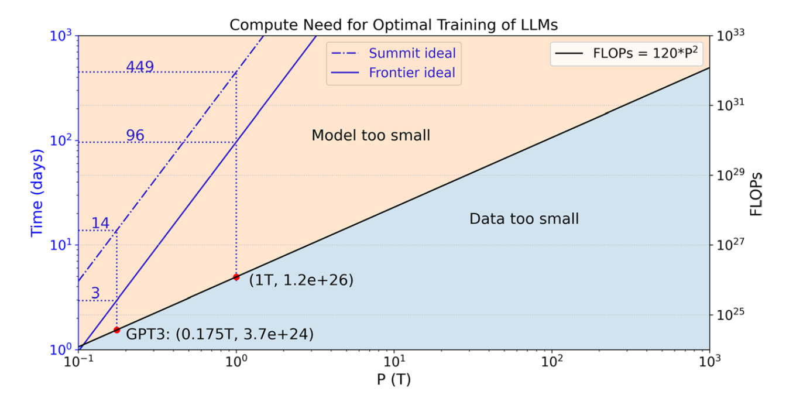
The energy consumption can be evaluated by:
\(E = t \times R_{𝚆𝚊𝚝𝚝}\)
where \(R_{𝚆𝚊𝚝𝚝}\) is the averaged power measured from few iterations.
For Summit and Crusher: the peak performance in half precision for the V100 (112 TFLOPS) and MI250X (384 TFLOPS) GPUs and linear scaling up to full system
Results
The training performance for FSDP and DeepSpeed-Megatron is 62.1 and 65.1 TFLOPS, respectively. From this baseline, the performance drops 20% and 44% for DeepSpeed-Megatron when using tensor parallelism within a NUMA domain and a node on Summit, respectively. The impact for FSDP is less (30% within a node compared to 44% for DeepSpeed-Megatron) due to less frequent communication and a smaller total message size.
Scaling analysis
We scale up the LLMs training on both Summit and Crusher:
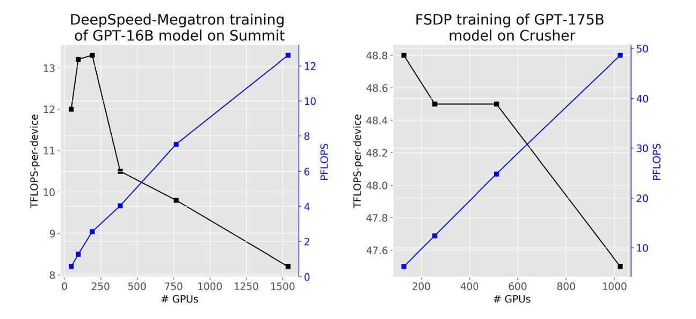
The scaling efficiency is about 97%, signaling Frontier can be a promising platform for training LLMs of these model sizes
Energy consumption
To estimate the energy usage, we trace the GPU power in watts during the training for FSDP training of GPT 175B model on Summit and Crusher. One batch step takes 359 and 301 s, correspondingly.
The averaged power usage is about 85 and 408 Watts, for Summit and Crusher, respectively, and the corresponding computational efficiency is 0.165 and 0.235 TFLOPS/Watt.
As Crusher system bears the same architecture as the first Exascale system Frontier and their unprecedented mix-precision capability, we believe they are well-suited as the platform for training LLMs at extreme scale.
One caveat to consider in our estimation is that the analysis is based on the current implementations of GPT-NeoX (DeepSpeed-Megatron) and PyTorch (FSDP). It’s important to note that the field is rapidly evolving, with ongoing advancements that can further reduce communication costs.
Conclusion
For theoretical peak and achievable performance, the minimum per-device communication bandwidth needed is 37 and 94 GB/s, respectively. The current 25 GB/s per-device on Crusher is not sufficient to support linear scaling for training GPT 1T model.
We ignore I/O requirement in our analysis because it can be straightforwardly hidden among computations given the typical global batch size of millions of tokens.
Ideas
-
Graph with Computation need (FLOPs) and ideal training time (days) assuming peak performance and perfect scaling for optimal training of LLMs on Summit and Frontier, respectively. This assumes perfect scaling --> can we do it with estimated scaling from Frontier?
-
Compare real benchmarks with projections from Yin paper
Scaling Laws for Large Language Models
Introduction
Analysis of cross entropy loss for LLMs. It scales as power law with regards to model size N, dataset size D, and amount of computation for training C. Network depth and width have minimal effect on the scaling.
Takeaways
- Performance depends on scale, so number of parameters, amount of data, and amount of computation.
- Performance depends weakly on network depth and width.
- Smooth parameters: performance has a power law dependence with N, D and C.
- Performance is good if \(N \approx D \). Performance penalty depends approximately on the ratio \(N^{0.74}/D\). So by increasing the model size by 8x, we would need 5x the data to maintain performance and avoid penalty.
- These networks are more sample efficient compared to smaller networks.
- Convergence is inefficient, optimal performance is obtained when stopping shortly of convergence.
- Optimal batch size is a power of the loss only. It can be calculated by measuring the gradient noise scale.
Scaling Laws
- \( L(N) = (\frac{N_c}{N})^\alpha_N\) is the loss by keeping the number of parameters fixed. where \(N_c \approx 8.8 \times 10^{13} \) and \(\alpha_N \approx 0.076\). If we increase model size then the dataset size has to be increased linearly, according to \(D \approx N^{0.74}\).
- \( L(D) = (\frac{D_c}{D})^\alpha_D \) is the loss by keeping the dataset size fixed.
- \( L(C_{min}) = (\frac{C^{min}_c}{C^{min}})^{\alpha^{min}_c} \) is the loss by keeping the amount of computation fixed.
Each \( \alpha \) parameter indicates the degree of performance improvement with respect to the parameter.
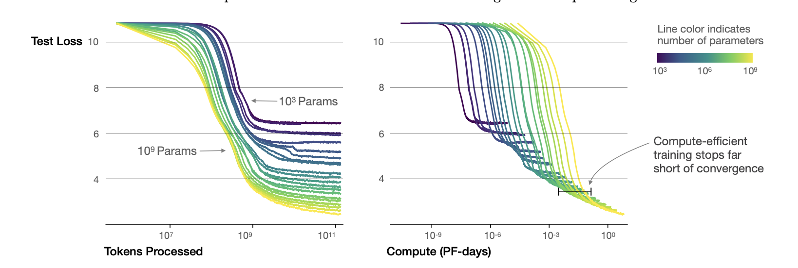
Critical Batch Size
The critical batch size is used for understanding the tradeoff speed-efficiency for data parallel training. It also obeys the power law L.
\( B_{crit}(L) = \frac{B_*}{L^{\frac{1}{\alpha_B}}} \)
where \(B_* \approx 2^{8}\) and \(\alpha_B \approx 0.21 \).
Critical Batch size follows the same scaling laws as performance increases. It needs to be increased by a factor of 2 for every 13% decrease in loss. In the same way, it is indipendent of network depth and width and model size.
\( B_{crit}(L) = E_{min} / S_{min} \)
where \(E_{min}\) is the minimum amount of samples needed to be processed and \(S_{min}\) is the minimum amount of steps needed to reach the L.
Early Stopping
Overfitting is proportional to the correction from ending training at \( S_{stop} \), where \( S_{min} \approx S_{stop} \). Also this needs to be an under-estimation, as test loss decreases slower than training loss.
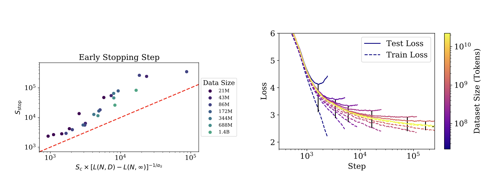
\( S_{stop}(N, D) \geq \frac{S_{min}}{[L(N, D) - L(N, \inf)]^{\frac{1}{\alpha_s}}} \)
where \( L(N, \inf) \) is the converged loss after training on infinite data.
Training Compute-Optimal Large Language Models
Summary
Optimal model size and number of tokens is fixed with the compute budget.
What is found is that model size N and numbe of tokens D should scale equally.
\( 2 \times N \implies 2 \times D \)
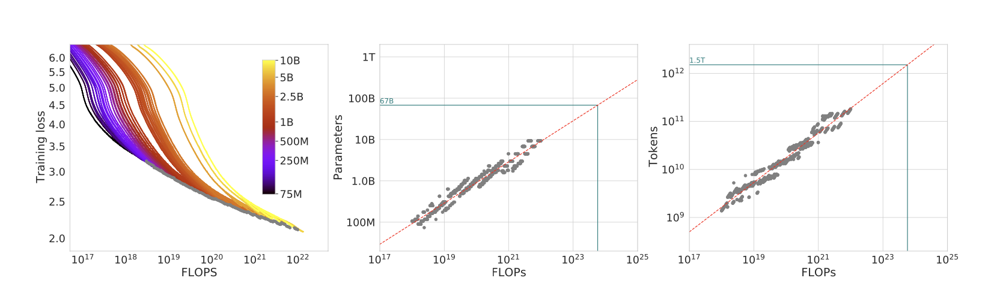
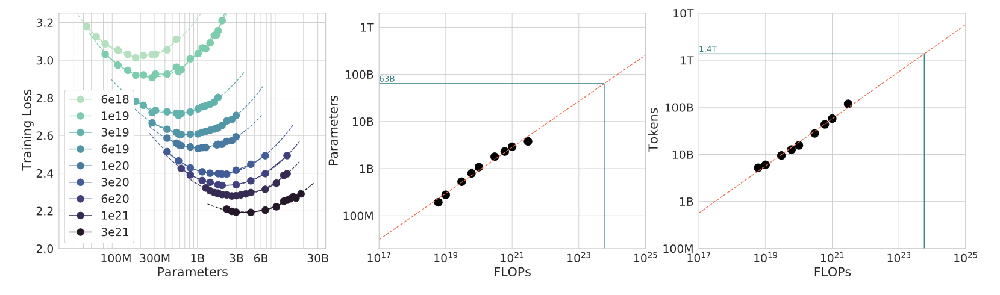
Given a fixed FLOPs budget, how should we tradeoff model size N and training tokens D?
- Fix N and vary D (from 70M to 10B)
- Fix D and vary N (create 16 FLOPs curves (isoFLOPs))
- Fitting a parametric loss function: model all losses as parametric functions of N and D
\( \hat{L}(N, D) = E + \frac{A}{N^{\alpha}} + \frac{B}{N{\beta}}\)
where \(E\) is the entropy of natural text, the second term indicates how a transformer with N parameters still underperforms, and the third term is the finite number of optimization steps.
This function can be optimized with Huber loss, creating M isoFLOPs slices and isoLoss contours.
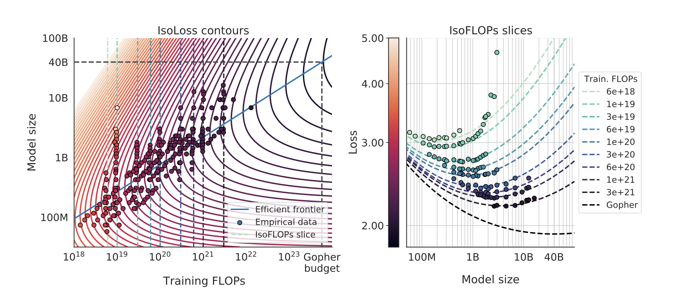
Optimal model scaling?
All three approaches yield the same optimal scaling law: to keep C constant, N and D have to scale in a proportional way.
Scaling Data-Constrained Language Models
Summary
In a data constrained regime [900B, 9B] parameters, with a fixed data and compute budget, after four epochs, the delta in loss is negligible. This implies a decreasing value in repeated tokens.
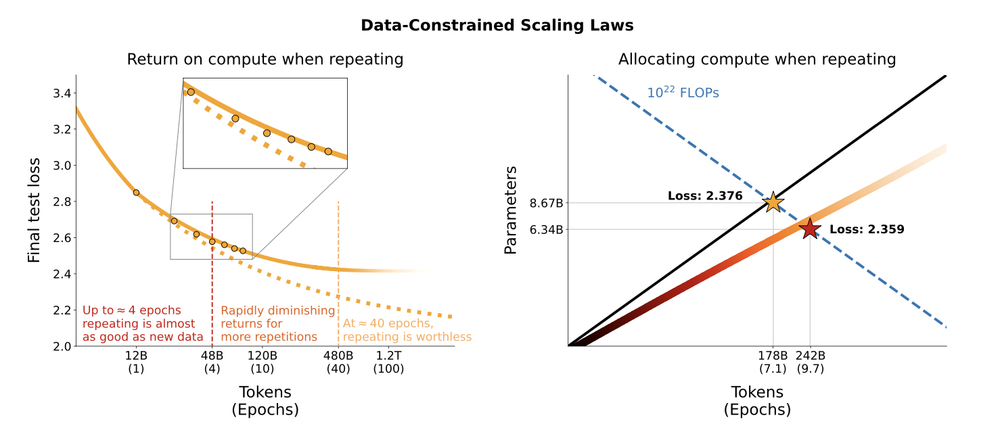
What is the best allocation and return for the given C resources?
- Allocation: how to distribute the compute budget between the model size and the number of training tokens?
- Return: how to measure the gain performance?
Why repeating data? Cause there may not be enough, and it is cheap to generate, but also repetition for the model, that's why we have epochs.
Measure of validation loss for isoFLOPs: too many epochs lead to overfitting. This under any D. For most D sizes, it seems 7 epochs is the best amount.
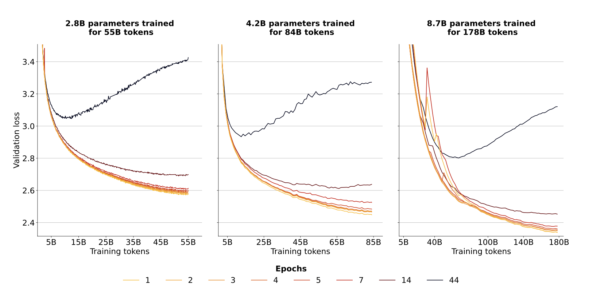
- Allocation: optimized by scaling epochs more than other parameters.
- Return: sizeable when repeating data, after 16 epochs, the gain is negligible.
Scaling laws still hold when repeating several epochs, although with diminishing returns.
Parallelization
Techniques for pytorch
- DDP: the model is copied on all processes, the dataset is split on all the workers and each model is fed a different batch gradient communication is used to keep the models in sync (also overlap of gradient computation)
- RPC: used if training paradigm can’t fit using DDP
- Collective Comms: foundation for RPC and DDP, low level APIs
Paradigms
- Model Parallelism: each worker focuses on a portion of the model, best for large models.
- Data Parallelism: split train set on each worker, shared weights (DDP)
- Parameter server architecture: central node with parameters, workers update the weights by computing the gradient
- All-Reduce Comms: several workers compute private gradient, then combine with all-reduce operation to share global gradient.
- Gradient accumulation: compute gradient on several minibatches, used if comms overhead is high.
Distributed deep learning
Distributed training is the process of subdividing the training workload of, for example, a large neural network across multiple processors. These processors are often referred to as workers, and they are tasked to compute in parallel to speed up the training process. There are two approaches to parallelism: data and model. In data parallelism, the full training set is divided between all the workers, where a copy of the model is also kept. Training is done either synchronously, where all the workers wait for each other, synchronize the gradients, and only then perform the backward step; or asynchronously, where a selected worker is tasked with keeping an updated version of the weights, and all the others can read and write from this worker, often called a ”parameter server”. Using the latter procedure means that all resources are used at the same time, without any delay. However, it also means that only one worker at a time is training with the latest version of the weights. In large clusters the centralized nature of this approach can also create bottlenecks. Model parallelism, on the other hand, divides the model either horizontally, i.e. node-wise, or vertically, i.e. layer-wise, between several workers who are allowed to run at the same time. This approach also reduces the footprint of the model in each worker, making it lighter on the GPU’s memory.
DDP
Distributed Data Parallel is a method of data parallelism that enables a program to operate on numerous machines simultaneously. Applications utilizing DDP generate numerous processes and initialize one DDP instance for each process.
FSDP
In some cases, it may not be possible to create a duplicate of the model for every process. In these instances, Fully Sharded Data Parallel may be utilized, where the optimiser states, gradients, and parameters of the model are subdivided across all DDP ranks. In this case, the neural network is divided into smaller sub-models, each of which represents a portion of the parameters of the overall model. This approach allows different parts of the model to be processed simultaneously by different processing units, and can be used in conjunction with a data-parallel approach that splits the training set to achieve even faster processing times. This results in a program that has less impact on GPU memory, thus reducing execution times.
DeepSpeed
DeepSpeed is a deep learning optimisation suite that enables efficient scalability and faster execution times for both training and inference of large machine learning models. It was developed by Microsoft and claims to offer a 15x speedup over other state-of-the-art parallelization techniques. It provides memory efficient data parallelism and enables training without model parallelism through a novel solution called Zero Redundancy Optimizer. Unlike basic data parallelism, where memory states are replicated across data-parallel processes, ZeRO partitions model states and gradients to save significant memory. Several other memory optimisation techniques are also used, such as Constant Buffer Optimisation, which combines all communication-based operations into a single operand, and Contiguous Memory Optimisation, which reduces fragmentation during training.
Notes on Talks
A Data-Oriented Perspective
These are Data-Driven approaches
Here are the major climate-centered datasets used in the field:
| Dataset | Size | Where? |
|---|---|---|
| MACCA | 60 TB | Nasa |
| CMIP6 | 25 TB | |
| Earth System Configuration Grid | 25 TB | ORNL |
| ERA5 | 1.5 PB | ECMWF |
| ARM | 50 TB | ORNL |
Information as value chain: how information is created, stored, and used in a particular context.
- How can we do this?
- How are agencies taken from agencies and used in the field?
- Is data free of errors?
- Without any bias?
- Is the data reliable?
Model Summary
Here are some of the state-of-the-art models in the field and their performance:
| Model | Precision | Forecast time |
|---|---|---|
| PanguWeather | < 50 m | 7 days |
| GraphWeather | < 50 m | 7 days |
| GraphCast | < 60 m | 8 days |
| ClimaX | < 100 m | 7 days |
Other approaches:
- Swin-SpatioTemporal Transformer: currently evaluated for NASA project Higher complexity, better for small scale
- Spherical Fourier Neural Transformer: to avoid noise and blurring problem Due to spherical projection of grid, problem is accentuated at the poles. This model is able to avoid this problem, using this operator for sphere geometry.
- GraphCast is better at small resolution and at different scales. Also better at compressing information.
- IFS uses global 9 km resolution data. On long term forecasts, it is better than ML models. However with higher resolution data (25km data), ML models are better.
- Ensamble Forecasts: run several simulation from same initial conditions, and average the results. This is a common technique in NWP. Same approach can be used for ML models.
AI 4 Good
Second Climate Forecast Revolution
As the first one revolved around Numerical Weather prediction forecasts (solving physics equations to predict weather eg. IFS).
Weatherbench 1
First attempt at a ML data oriented approach to weather forecasting. First winter of AI for climate, as not enough data was available. Data-based approaches were not precise enough to reach NWP levels of accuracy.
Weatherbench 2
- Data: in Zarr format + IFS baselines
- Evaluation Code: usind datacloud or other remote computing services (colab, aws, etc)
- Evaluation platform: interactive graphs, for user visualization
Are AI models just blurring?
How do we understand this factor? First we can check if the model is able to predict extremes (or is just averaging the data).
Blurring exists, but is limited to small scales and does not influence the prediction of extremes. Many ML models have been used for Hurrican Season prediction. Graphcast is better than NWP.
Tropical Cyclones
Quick Notes
Structure: cyclones develop in the presence of these conditions:
- warm water of tropical oceans (>26.5C) → collects energy through convection (?)
- unstable atmosphere, cooling fast enough to cause thunderstorms
- moist middle atmosphere (humidity)
- low vertical wind shears, and little change in wind direction with change in height
Tropical Cyclone Genesis potential index (GPI) → accurate, but only at low resolutions
Often these are good for spatial correlation but bad for temporal one (difficulty in predicting inter-annual events) Solution is to use evolutionary algorithms to obtain Pareto Front of possible solutions (all possible optimal trade-offs between spatial and temporal optimality) → all solutions still have non acceptable temporal resolution.
Tropical storms are very rare, lots of samples where the event returns negative, only a small portion positive.
Physics
A tropical cyclone is a storm system that rotates rapidly, featuring a low-pressure center, intense winds, and an organized series of thunderstorms that cause intense rain and sudden gusts. The term tropical refers to the geographical origin of these systems, which form almost exclusively over tropical seas, while cyclone refers to their winds moving in a circle, around a central eye, with surface winds blowing counterclockwise in the Northern Hemisphere and clockwise in the Southern one. These cyclones have a diameter most often found between 100 and 2,000 km. The powerful swirling winds of a tropical cyclone, as the ones shown in Figure 2.3, arise due to the Earth’s rotation imparting angular momentum as air moves towards the axis of rotation. These storms are generally most severe when over or near water and quickly lose intensity when moving over land. Damage can result from strong winds, rain, high waves, and storm surges, all of which are phenomena of rising water caused by high-speed winds pushing water towards the coast.
These tropical storms are low-pressure regions in the troposphere. The pressure is the lowest near the surface, while at the center of these storms sea level pressures are among the lowest ever observed. These systems are called ”warm core” because the environment near their center is warmer than the ambient temperature at all heights. At the periphery of the storm, the air may be nearly calm; however, because of the Earth’s rotation, the air possesses non-zero absolute angular momentum. As the air flows radially inwards, it starts rotating cyclonically so as to conserve angular momentum effectively. At a certain distance from the centre of the storm, air starts moving upwards towards the top of the troposphere. The air, once lifted, moves away from the storm’s centre and forms a layer of high clouds called ”cirrus clouds”. These processes ultimately create a wind field that is almost symmetrical around the storm’s centre. Wind speeds are low at the centre, increase moving outwards towards the radius of maximum winds and then decay more gradually with radius.
Comparing State-of-the-Art Models
Challenges and Opportunities
Difficulties
- Post-processing of data
- Costs for specific scenarios and analysis (ex. outliers in rare events)
- Under-utilization of existing data since it is expensive to process
- Data quality and quantity
Opportunities
- Multimodal models: radar, satellite, numerical weather prediction, etc.
- Interpretable models / explainable AI / causal AI
- Generizable models
- can the model predict out of scope?
- can the model avoid bias and flaws in the training data?
- Continuous learning: can the model learn from new data?
- On-device adaptation: customize a model based on local data (ex. adjust to local climate)
- Federated Learning: each company trains their own model, but they can share their models to improve the overall model. Global model learns from updates from local models.
Foundation Model for Climate Improvements
Incremental Probability in Cyclone Prediction
One possible improvement to the presented work arises from the fact that the dataset currently illustrates the likelihood of a cyclone being present in a patch with a simple Gaussian distribution. Nonetheless, as the weather variables increasingly make it more plausible, the probability of a cyclone should raise over time. It may be possible to encode this behaviour by manipulating the standard deviation parameter of the Gaussian, resulting in the probability area progressively expanding over time. This would require determining when a patch is displaying indications of forming a tropical cyclone and identifying the exact central position in the patch.
Parameter oriented training
One of the main differences between the current implementation of the model and the one presented in the ClimaX paper, is the fact that the latter is trained to predict the input variables shifted by a certain amount of lead time, and the training is repeated for several lead times. This allows the architecture to learn the correct behaviour of each variable over time, and enhances its flexibility by allowing at inference time to take a lead time parameter, and output the correct prediction. This approach has been referenced to as ”parameter oriented training”, and by its very flexible nature allows for a more general purpose model, which can be used for several different tasks.
Global forecasting system
In a similar way to ClimaX’s approach, it may be feasible to merge the image patches and generate a worldwide weather forecast. This would not necessitate any modifications to the current model since the global image normalization is already executed. Additionally, the dataset can be adjusted to share an N-pixel border with adjoining patches and prevent loss of nearby data. This modification addresses weather variable forecasting and has no impact on this project’s fine- tuning section. Predicting global cyclones may not be necessary since the regions where they most often form are widely recognized, and a regional forecasting approach would be enough.
Time-Series Transformers
Among several advantages of the transformer architecture, the ability to capture long-range depen- dencies and interactions is particularly central to time series modeling. A possible improvement to the current work could revolve around increasing the dimensionality of the input data by adding a temporal dimension, and using this information to better predict the future weather. This would imply passing a sequence of time snapshots to the model, and the tensor’s dimensions would become <B, T, V, H, Lat, Lon>, where T is the number of time snapshots.
As for the modifications necessary to the current architecture, the positional encoding of the transformer has to be changed, to allow for the correct encoding of the temporal dimension. What has been done in similar works, is allow for the embedding to be learned from time series data, and not be fixed as in the current work. A similar approach is to use the timestamp information to influence the training of these embedding layers, and allow for a more accurate representation of the data.
Ensemble of models
Connection to the Intertwin project
One possible mean of unifying the two works could revolve around the use of graph neural network architectures, and integrating these mostly novel approaches into large foundation models. While Fronza’s work revolved around graph neural networks, there exist in the literature examples of applications of these kind of models to global weather forecasting, which is an essential requirement for developing a foundation model based on GNNs. These techniques have already been tested in the literature, where Graph Transformers are used to generate text, processing both the data with the classical approach, but also building a knowledge graph of the sentence, enhancing the understanding of the context. This approach could be used to build a foundation model which is able to understand the context of the input data, and use this knowledge to improve the prediction ability of the model. In this case, the context could be the current regional weather, and the model could use this information to better predict the future weather